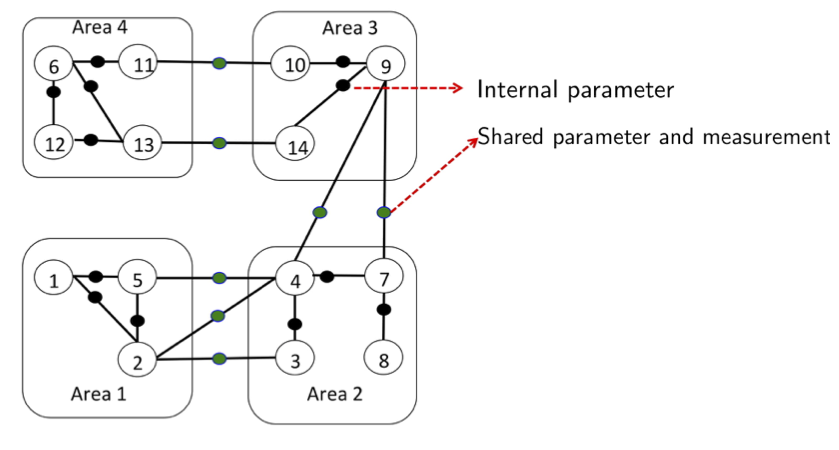
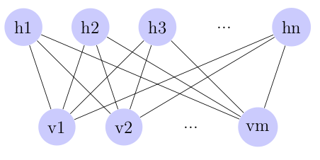

Course Projects
Decentralized State Estimation using ADMM in Networks(report)
- To deal with the computational complexity issue in state estimation in large networks, an ADMM based decentralized estimation is evaluated on a network. The network is divided into multiple areas and the estimation problem is posed as an optimization problem with constraints that encourage consistency between the estimates of shared parameters formed by multiple areas. From the simulations, it is observed that the ADMM based estimation strategy allows for better estimation quality at all areas as compared to performing independent local estimation.
- In practical situations, the network model can deviate from the true model because of external disturbances or errors in the sensing units. Two possible sources of model devia- tion: bad data and sensing unit errors, are considered and robust estimation strategies are developed. It is observed that the robust estimation strategies provide better performance as compared to a non robust estimation strategy that ignores the effect of these imperfections in the nominal model.
-
Non-negative Matrix Factorization(report)- In this project, a heuristic approach to non-negative matrix factorization is implemented. Conjugate gradient optimization method and projected gradient method are utilized alternatively for solving the non-negative least squares problem. The regularization term incorporates sparsity structure in the factorization, which is particularly relevant in applications like classification. The NMF implementation in this project is used for hand-written digits classification for USPS dataset.
Study of Restricted Boltzmann Machines and Their Application in Classification(report)
- RBMs are the building blocks for deep models such as deep Boltzmann machines and deep belief networks. In this project, contrastive divergence (CD) algorithm is implemented to learn the parameters of an RBM.